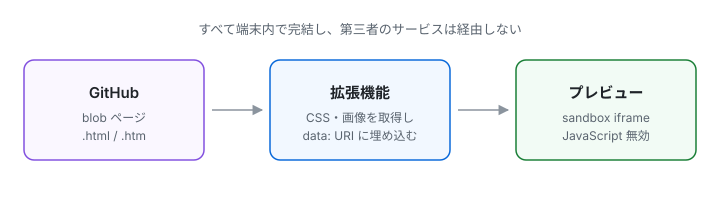

このページを GitHub 上で開き、右下の HTML Preview を押してください。以下の項目がすべて想定どおりなら正常に動作しています。
styles/theme.css を読み込んでいます。
このページに枠線と余白がついていれば OK
theme.css が base.css を @import しています。
@import 展開ずみ
この文字が緑の角丸バッジになっていれば OK。素の文字のままなら @import の展開に失敗しています。
base.css ではなく theme.css から url("../assets/texture.svg") を参照しています。
ページ全体の背景に薄いドット模様が出ていれば OK

紫の破線枠 + 薄紫の背景になっていれば OK
この拡張機能は HTML 内のスクリプトを実行しません。下のスクリプトが動くと表示が赤に変わります。
JavaScript: 実行されていない（想定どおり）
プレビュー内のリンクは、対応する GitHub のファイルページを別タブで開きます。
このリンク先では、読み込みに失敗したときの警告表示も確認できます。